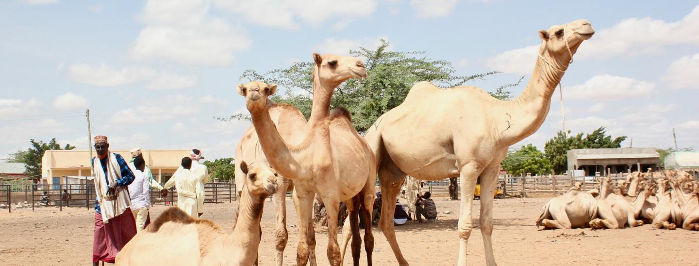

Northern's market


Camels are remarkable animals adapted to survive in some of the harshest environments on Earth, notably deserts. There are two main species: the dromedary, or Arabian camel, which has a single hump, and the Bactrian camel, which has two humps. These humps are reservoirs of fatty tissue, not water, as commonly believed, and can be converted into energy and water when food and water are scarce. Camels are well-equipped to handle extreme temperatures; they can withstand daytime desert heat and cold desert nights. Their long legs help keep their bodies away from the hot ground, and their thick coats insulate against the sun. Additionally, camels have unique adaptations such as the ability to close their nostrils to keep out sand and long eyelashes to protect their eyes from dust. They can drink up to 40 gallons of water in one go when rehydrating and are capable of surviving for weeks without water by minimizing water loss and efficiently using the water stored in their bodies. Camels have been domesticated for thousands of years and are vital to the livelihoods of many cultures, serving as pack animals, sources of milk, meat, and even as a means of transport across vast desert landscapes.